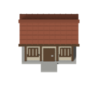
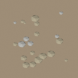
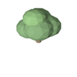
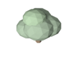

<!doctype html>
<html lang="ja"><meta charset="utf-8"><meta name="viewport" content="width=device-width,initial-scale=1">
<title>里継 ― 景観の試作</title>
<style>
*{box-sizing:border-box}body{margin:0;background:#0b1017;color:#f3eddf;font:15px/1.7 'Yu Gothic',Meiryo,sans-serif}main{max-width:1120px;margin:auto;padding:36px 24px}h1{font-size:26px;letter-spacing:.12em;margin:0}p{color:#b9bec5}a{color:#ffe0a0}nav{display:flex;gap:24px;margin:20px 0 28px}.grid{display:grid;grid-template-columns:repeat(3,1fr);gap:20px}figure{margin:0;border:2px solid #eae5da;border-radius:3px;background:#121b22}figure .stage{height:230px;display:grid;place-items:center;background:repeating-conic-gradient(#778066 0 25%,#737c62 0 50%) 0/32px 32px}img{width:220px;height:220px;object-fit:contain;image-rendering:pixelated}figcaption{padding:12px 16px}small{display:block;color:#b9bec5}footer{margin-top:28px;color:#abb3bc;font-size:13px}@media(max-width:700px){.grid{grid-template-columns:repeat(2,1fr)}figure .stage{height:170px}img{width:160px;height:160px}}
</style>
<main><h1>里継 ― 山と里の景観試作</h1><p>共通のカメラ・光・配色から作る、最初の3素材。量産前に、形と大きさを比べるためのプレビューです。</p>
<nav><a href="./?scenery=preview">試作の景観で歩く →</a><a href="./">現在の景観と新UIを見る →</a></nav>
<div class="grid">
<figure><div class="stage"></div><figcaption>里山の民家<small>汎用モデル。実在の個人宅は再現していません。</small></figcaption></figure>
<figure><div class="stage"></div><figcaption>山肌・裸地<small>繰り返し配置する地面。整備後は若木に変化。</small></figcaption></figure>
<figure><div class="stage"></div><figcaption>広葉樹・春<small>同じ木のモデルから、四季を出力。</small></figcaption></figure>
<figure><div class="stage"></div><figcaption>広葉樹・夏<small>新緑を濃くした季節差分。</small></figcaption></figure>
<figure><div class="stage"></div><figcaption>広葉樹・秋<small>既存の共通配色による、控えめな秋色。</small></figcaption></figure>
<figure><div class="stage"></div><figcaption>広葉樹・冬<small>薄雪の色表現。落葉形状は今後の調整対象。</small></figcaption></figure>
</div><footer>確認したい点：屋根の形・木の密度・主人公との大きさの比率。景観プレビューは配置の検討用で、素材の量産はまだ行っていません。</footer></main>
</html>
